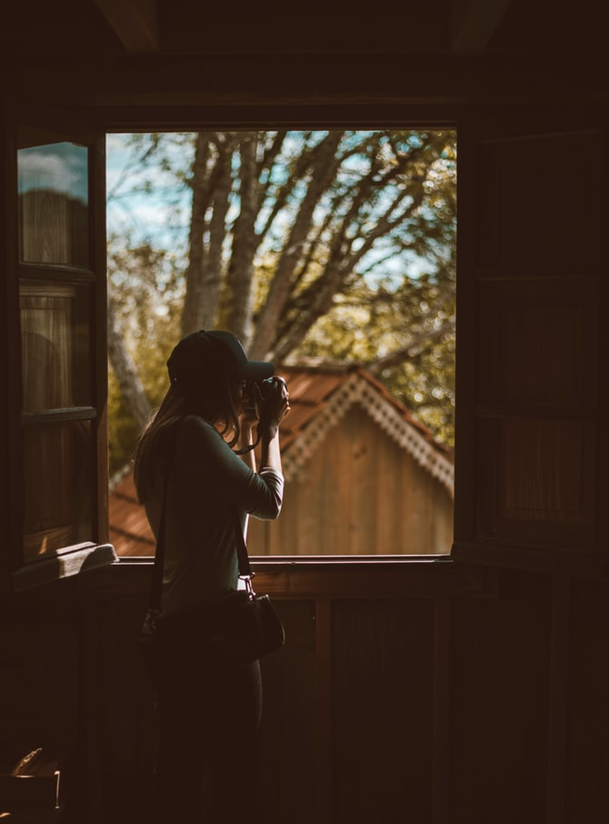

top 10
Forlorn Places, Fading Faces
F
o
r
l
o
r
n
P
l
a
c
e
s,
F
a
d
i
n
g
F
a
c
e
s
about

Hi there!
My name is Kiah. I am an aspiring journalist and a photographer with a great interest in urban exploration, otherwise known as “urbex”. Abandoned locations have drawn me ever since I was a child. “What is the history behind those places?” I would ask myself whenever I’d happen to stroll by a boarded-up manor or a decrepit bungalow. Who lived there? What happened to them, and why did they leave?
Or… did they, ever?
While I prefer not to jump to conclusions about any seemingly inexplicable occurrences without first trying to find a logical, rational explanation, I have to admit… throughout my urbex experience, I have encountered odd things more than once or twice. Naturally, I did my best to try and record anything curious.
My gallery is dedicated to some of my most exciting explorations. I advise you to look carefully at every photo. Some of these may just be a little more than simply nice shots of photogenically-decrepit locations.